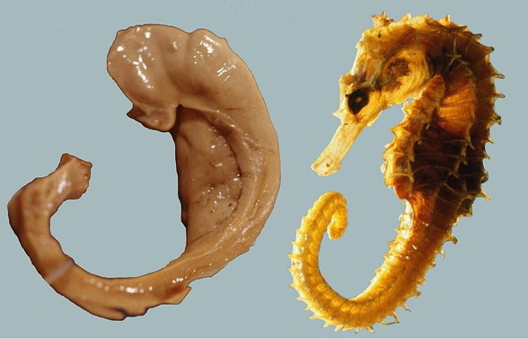

knitr::include_graphics("http://www.pitt.edu/~super1/lecture/lec14361/img024.GIF")
http://www.scientificamerican.com/article.cfm?id=what-is-the-memory-capacity
https://theelearningcoach.com/learning/10-definitions-learning/
Learning is the process of acquiring new understanding, knowledge, behaviors, skills, values, attitudes, and preferences. https://en.wikipedia.org/wiki/Learning
Although the literature on learning styles is enormous, very few studies have even used an experimental methodology capable of testing the validity of learning styles applied to education. Moreover, of those that did use an appropriate method, several found results that flatly contradict the popular meshing hypothesis. We conclude therefore, that at present, there is no adequate evidence base to justify incorporating learning-styles assessments into general educational practice.


| Computers | Brains |
|---|---|
| Computers have separate memory and processing stores | Brains store info everywhere, but there are specialized regions |
| Computer memory has specific addresses | Brains store in distributed networks |
| Computer memory is (usually) non-volatile | Memories in brains naturally fade |
Computer memory stores all types of information–images, sounds, text, data–as binary sequences, e.g., 01101110 |
Human memory stores all types of information in patterns of synaptic connections and ??? |
| Computers render these sequences differently based on information about the type of data stored | Brains retrieve or recall different forms of information based on ??? |
| Digital computers were inspired by mathematical models of neurons | Neurons can be simulated by mathematical models implemented in computers |


This paper presents a new approach to behavioral problems which might be called molecular biopsychology… Simply stated, it is hypothesized that the memory engram must be coded in macromolecules… As the geneticist studies the inherited characteristics of an organism the psychologist studies the modification of this inherited matrix by interaction with the environment. Possibly the biochemical and cellular physiological processes which encode new responses are continuous throughout the phyla (as genetic codes are) and therefore would be reasonably similar for a protozoan and a mammal. (Beatrice Gelber, 1962)
Taking stock, we believe that Gelber’s experiments, though not without their limitations, convincingly demonstrated Pavlovian conditioning in Paramecia. Sadly, her critics seem to have won in the long term. Most reviews of the literature, if they mention Gelber’s work at all, quickly dismiss it…(Gershman et al., 2021)
If single cells can learn then they must be using a non-synaptic form of memory storage. The idea that intracellular molecules store memories has a long history, mainly in the study of multicellular organisms. (Gershman et al., 2021)
“When an axon of cell A is near enough to excite cell B and repeatedly or persistently takes part in firing it, some growth process or metabolic change takes place in one or both cells such that A’s efficacy, as on of the cells firing B, is increased.”
(Hebb, 1949, p. 62)
“Neurons that fire together wire together.”
(Lowell & Singer, 1992, p. 211)
“a persistent strengthening of synapses based on recent patterns of activity. These are patterns of synaptic activity that produce a long-lasting increase in signal transmission between two neurons.[2] The opposite of LTP is long-term depression, which produces a long-lasting decrease in synaptic strength.” https://en.wikipedia.org/wiki/Long-term_potentiation

knitr::include_graphics("http://www.pitt.edu/~super1/lecture/lec14361/img024.GIF")


How to learn/remember “causal chains”?

““the area subdivisions are in large part anatomically meaningless and misleading as to the presumptive functional divisions of the cortex””



Gray matter volume differences in the hippocampus relative to controls have been reported to accompany this expertise. While these gray matter differences could result from using and updating spatial representations, they might instead be influenced by factors such as self-motion, driving experience, and stress. We examined the contribution of these factors by comparing London taxi drivers with London bus drivers, who were matched for driving experience and levels of stress, but differed in that they follow a constrained set of routes. We found that compared with bus drivers, taxi drivers had greater gray matter volume in mid-posterior hippocampi and less volume in anterior hippocampi. Furthermore, years of navigation experience correlated with hippocampal gray matter volume only in taxi drivers, with right posterior gray matter volume increasing and anterior volume decreasing with more navigation experience. This suggests that spatial knowledge, and not stress, driving, or self-motion, is associated with the pattern of hippocampal gray matter volume in taxi drivers. (Maguire, Woollett, & Spiers, 2006)


Together with recent reports showing retinotopic coding persisting as far as the ‘cortical apex’ [15,16,31], including the DMN [15,16], and the hippocampus [31,32], our findings challenge conventional views of brain organization, which generally assume that retinotopic coding is replaced by abstract amodal coding as information propagates through the visual hierarchy [7,8,9,10] toward memory structures [11,12,13,14] (Steel et al., 2024)

“Every day is alone in itself, whatever enjoyment I’ve had, and whatever sorrow I’ve had…Right now, I’m wondering, have I done or said anything amiss? You see at this moment, everything looks clear to me, but what happened just before? That’s what worries me. It’s like waking from a dream. I just don’t remember.”